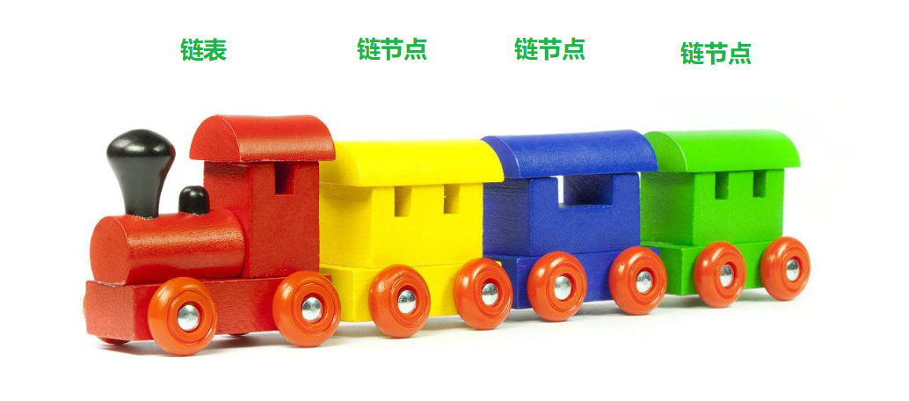
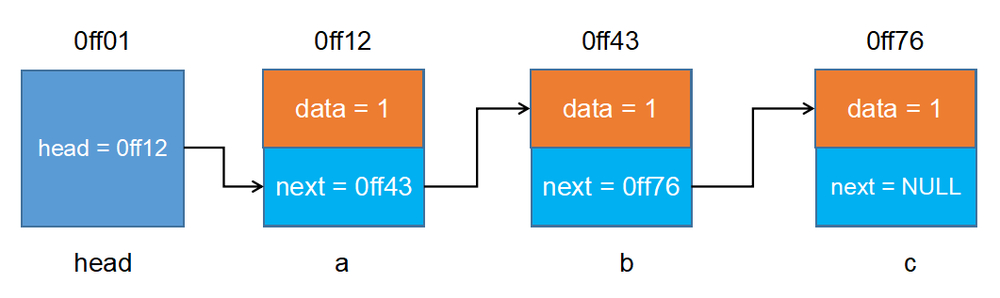
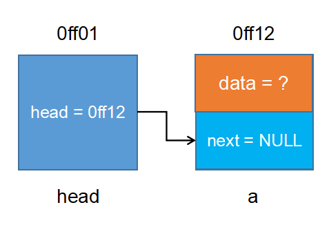
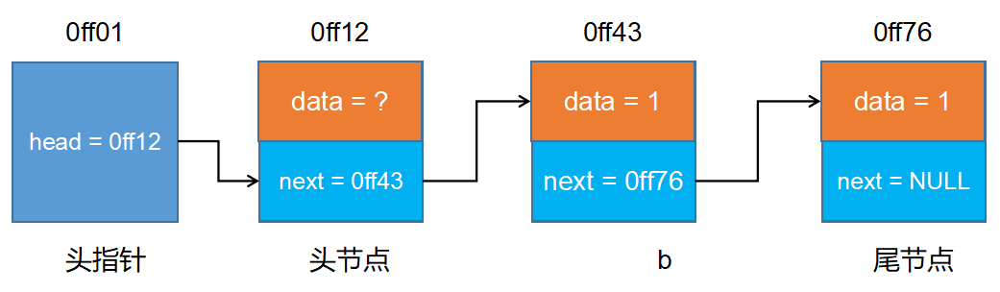

# 链表

链表实现了，内存零碎数据的有效组织。比如，当我们用 malloc 来进行内存申请的时候，当内存足够，但是由于碎片太多，没有连续内存时，只能以申请失败而告终，而用链表这种数据结构来组织数据，就可以解决上类问题.
# 静态链表

#include <stdio.h> | |
#include <stdlib.h> | |
#include <string.h> | |
// 1. 定义链表节点 | |
typedef struct node{ | |
int data; | |
struct node* next; | |
} Node; | |
int main(int args, char* argv[]) | |
{ | |
// 2. 创建链表节点 | |
Node a; | |
Node b; | |
Node c; | |
// 3. 初始化节点数据 | |
a.data = 1; | |
b.data = 3; | |
c.data = 5; | |
// 4. 链接节点 | |
a.next = &b; | |
b.next = &c; | |
c.next = NULL; | |
// 5. 创建链表头 | |
Node* head = &a; | |
// 6. 使用链表 | |
while(head != NULL) | |
{ | |
int currentData = head->data; | |
printf("currentData = %i\n", currentData); | |
head = head->next; | |
} | |
return 0; | |
} |
# 动态链表
静态链表的意义不是很大，主要原因，数据存储在栈上，栈的存储空间有限，不能动态分配。所以链表要实现存储的自由，要动态的申请堆里的空间。
# 空链表

头指针带了一个空链表节点，空链表节点中的 next 指向 NULL
# 非空链表

头指针带了一个非空节点，最后一个节点中的 next 指向 NULL.
# 动态链表头插法
- 让新节点的下一个节点等于头结点的下一个节点
- 让头节点的下一个节点等于新节点
上面 1,2 顺序不能放过来，否则头节点后面原来的其它节点都会丢失.
#include <stdio.h> | |
#include <stdlib.h> | |
typedef struct node | |
{ | |
int data; | |
struct node* next; | |
} Node; | |
Node* createList() | |
{ | |
// 1. 创建一个节点 | |
Node* head = (Node *)malloc(sizeof(Node)); | |
if (head == NULL) | |
{ | |
return NULL; | |
} | |
head->next = NULL; | |
// 2. 接收用户输入数据 | |
int num = -1; | |
printf("请输入节点数据:\n"); | |
scanf("%i", &num); | |
// 3. 使用循环创建其它节点 | |
while(num != -1) | |
{ | |
// 3.1 创建一个新的节点 | |
Node* curNode = (Node *)malloc(sizeof(Node)); | |
curNode->data = num; | |
// 3.2 让新节点的下一个节点指向头节点的下一个节点 | |
curNode->next = head->next; | |
// 3.3 让头节点的下一个节点指向新节点 | |
head->next = curNode; | |
// 3.4 再次接收用户输入数据 | |
scanf("%i", &num); | |
} | |
// 4. 返回创建好的节点 | |
return head; | |
} | |
/** | |
* @brief printNodeList 遍历链表 | |
* @param node 链表指针头 | |
*/ | |
void printNodeList(Node* node) | |
{ | |
Node* head = node->next; | |
while (head != NULL) | |
{ | |
int currentData = head->data; | |
printf("currentData = %i\n", currentData); | |
head = head->next; | |
} | |
} | |
/** | |
* @brief destroyList 销毁链表 | |
* @param head 链表头指针 | |
*/ | |
void destroyList(Node* head) | |
{ | |
Node* cur = NULL; | |
while(head != NULL) | |
{ | |
cur = head->next; | |
free(head); | |
head = cur; | |
} | |
} | |
int main(int argc, char* argv[]) | |
{ | |
Node* nodeHead = createList(); | |
printNodeList(nodeHead); | |
destroyList(nodeHead); | |
return 0; | |
} |
# 动态链表尾插法
- 定义变量记录新节点的上一个节点
- 将新节点添加到上一个节点后面
- 让新节点成为下一个节点的上一个节点
#include <stdio.h> | |
#include <stdlib.h> | |
typedef struct node | |
{ | |
int data; | |
struct node* next; | |
} Node; | |
Node* createList() | |
{ | |
// 1. 创建一个节点 | |
Node* head = (Node *)malloc(sizeof(Node)); | |
if (head == NULL) | |
{ | |
return NULL; | |
} | |
head->next = NULL; | |
// 2. 接收用户输入数据 | |
int num = -1; | |
printf("请输入节点数据:\n"); | |
scanf("%i", &num); | |
// 3. 使用循环创建其它节点 | |
// 保留 head 指针在头部不动，创建另外一个指针进行插入新节点操作 | |
Node* pre = head; | |
while(num != -1) | |
{ | |
// 3.1 创建一个新的节点 | |
Node* curNode = (Node *)malloc(sizeof(Node)); | |
curNode->data = num; | |
// 3.2 让新节点链接到上一个节点后面 | |
pre->next = curNode; | |
// 3.3 当前节点下一个节点等于 NULL | |
curNode->next = NULL; | |
// 3.4 让当前节点变成下一个节点的上一个节点，也就是当前节点 | |
pre = curNode; | |
// 3.4 再次接收用户输入数据 | |
scanf("%i", &num); | |
} | |
// 4. 返回创建好的节点 | |
return head; | |
} | |
/** | |
* @brief printNodeList 遍历链表 | |
* @param node 链表指针头 | |
*/ | |
void printNodeList(Node* node) | |
{ | |
Node* head = node->next; | |
while (head != NULL) | |
{ | |
int currentData = head->data; | |
printf("currentData = %i\n", currentData); | |
head = head->next; | |
} | |
} | |
/** | |
* @brief destroyList 销毁链表 | |
* @param head 链表头指针 | |
*/ | |
void destroyList(Node* head) | |
{ | |
Node* cur = NULL; | |
while(head != NULL) | |
{ | |
cur = head->next; | |
free(head); | |
head = cur; | |
} | |
} | |
int main(int argc, char* argv[]) | |
{ | |
Node* nodeHead = createList(); | |
printNodeList(nodeHead); | |
destroyList(nodeHead); | |
return 0; | |
} |
# 链表销毁
/**
* @brief destroyList 销毁链表
* @param head 链表头指针
*/
void destroyList(Node *head){
Node *cur = NULL;
while(head != NULL){
cur = head->next;
free(head);
head = cur;
}
}
# 链表长度计算
传进参数的是 head 而不是 head 的地址 &head , 因此在 listLength () 形参 head是值传递 ，不会改变主函数中 head 的值，执行完此 func 后，主函数 head 仍指向链表的第一个头节点.
但是如果函数修改 node->data 值会改变主函数创建的链表里相应节点 data 的值.
/**
* @brief listLength 计算链表长度
* @param head 链表头指针
* @return 链表长度
*/
int listLength(Node* head){
int count = 0;
head = head->next;
while(head){
count++;
head = head->next;
}
return count;
}
# 链表查找
/**
* @brief searchList 查找指定节点
* @param head 链表头指针
* @param key 需要查找的值
* @return 链表头
*/
Node *searchList(Node *head, int key){
head = head->next;
while(head){
if(head->data == key){
break;
}else{
head = head->next;
}
}
return head;
}
# 节点删除
void deleteNodeList(Node *head, Node *find){ | |
while(head->next != find){ | |
head = head->next; | |
} | |
head->next = find->next; | |
free(find); | |
} |
# 给链表排序
/** | |
* @brief bubbleSort 对链表进行排序 | |
* @param head 链表头指针 | |
*/ | |
void bubbleSort(Node *head){ | |
// 1. 计算链表长度 | |
int len = listLength(head); | |
// 2. 定义变量记录前后节点 | |
Node *cur = NULL; | |
// 3. 相邻元素进行比较，进行冒泡排序 | |
for(int i = 0; i < len - 1; i++){ | |
cur = head->next; | |
for(int j = 0; j < len - 1 - i; j++){ | |
printf("%i, %i\n", cur->data, cur->next->data); | |
if((cur->data) > (cur->next->data)){ | |
int temp = cur->data; | |
cur->data = cur->next->data; | |
cur->next->data = temp; | |
} | |
cur = cur->next; | |
} | |
} | |
} |
/** | |
* @brief sortList 对链表进行排序 | |
* @param head 链表头指针 | |
*/ | |
void sortList(Node *head){ | |
// 0. 计算链表长度 | |
int len = listLength(head); | |
// 1. 定义变量保存前后两个节点 | |
Node *sh, *pre, *cur; | |
for(int i = 0; i < len - 1; i ++){ | |
sh = head; // 头节点 | |
pre = sh->next; // 第一个节点 | |
cur = pre->next; // 第二个节点 | |
for(int j = 0; j < len - 1 - i; j++){ | |
if(pre->data > cur->data){ | |
// 交换节点位置 | |
sh->next = cur; | |
pre->next = cur->next; | |
cur->next = pre; | |
// 恢复节点名称 | |
Node *temp = pre; | |
pre = cur; | |
cur = temp; | |
} | |
// 让所有节点往后移动 | |
sh = sh->next; | |
pre = pre->next; | |
cur = cur->next; | |
} | |
} | |
} |
# 链表反转
/** | |
* @brief reverseList 反转链表 | |
* @param head 链表头指针 | |
*/ | |
void reverseList(Node *head){ | |
// 1. 创建两个链表对象，原链表赋值给 pre, pre 读取每一个链表节点，cur 保留 pre 的 next 节点，避免下面的每次循环 pre 的 next 丢失 | |
Node *pre, *cur; | |
pre = head->next; | |
head->next = NULL; | |
// 2. 重新插入节点 | |
while(pre){ | |
// 2.1 记录 pre 的下一个节点，因为后面 pre->next 会改变. | |
cur = pre->next; | |
pre->next = head->next; | |
head->next = pre; | |
// 2.2 再把原来变化前的 pre->next 赋值给现在的 pre. | |
pre = cur; | |
} | |
} |